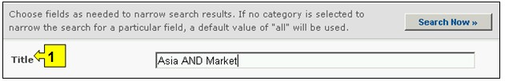

Ссылка: http://bch.cbd.int/database/bibliographic-references/
Механизм посредничества по биобезопасности учрежден в соответствии со Статьей 20 Картахенского протокола для содействия обмену информацией и опытом в отношении ЖИО и оказания содействия Сторонам в осуществлении Протокола. В целях выполнения этих функций базы данных МПБ содержат информацию, связанную с биобезопасностью и осуществлением Протокола, представленную Сторонами, правительствами и иными организациями.
Кроме Центра информационных ресурсов по биобезопасности (ЦИРБ), описанного в разделе 2.7 настоящего модуля, МПБ содержит также базу данных научных публикаций (полная библиографическая ссылка и реферат), опубликованных в национальных и международных периодических изданиях начиная с 1990 года, связанных с биобезопасностью, оценкой риска и использованием биотехнологии. Научно-библиографическая база данных поддерживается и управляется Международным центром генной инженерии и биотехнологии (МЦГИБ/ICGEB) с возможностью межсетевого взаимодействия с МПБ.
Поиск информации в Научно-библиографической базе данных (НББД) можно осуществлять, используя соответствующие ссылки в выпадающем меню раздела навигационной панели Finding Information (Поиск информации), или в меню в левой части страницы Поиск информации, или используя ссылку Научно-библиографическая база данных в тексте страницы.

Рисунок 94
На странице Поиска в Научно-библиографической базе данных предусмотрены десять полей с критериями уточнения поиска. Каждое из полей содержит выпадающее меню, позволяющее выбрать необходимый критерий. По умолчанию (если критерий не выбран) используется первый пункт меню. Справа от полей выбора критериев расположены кнопки, позволяющие перейти в режим выбора нескольких критериев. В этом режиме возможно добавление критериев поиска, путем выбора необходимых критериев при удерживании нажатой кнопки Ctrl (Control) на клавиатуре.
Если в ходе поиска будет найдено более 1000 записей, то в качестве результата поиска будут отражены только первые 1000 записей.

Рисунок 95
Меню поля 1 [Название] позволяет указать название публикации. Можно также указать отдельное слово или слова, используя стандартный синтаксис с применением AND и OR для комбинации слов.

Рисунок 96
Меню поля 2 [Автор(ы)] позволяет осуществлять поиск по конкретному автору(ам) публикации, используя фамилии автора(ов).

Рисунок 97
Меню поля 3 [Год публикации] содержит возможности уточнения даты публикации, что позволяет выбрать для поиска: (1) конкретный год публикации, указав только нужный год в поле «год публикации», или (2) выбрать период публикации, указав «ранее чем» или «позднее чем» в поле «период» и соответствующий год в поле «год публикации».

Рисунок 98
Меню поля 4 [Издательство] позволяет осуществлять поиск по названию конкретного издательства.

Рисунок 99
Меню поля 5 [Тематическая область] содержит список основных тематических областей публикаций НББД, что позволяет сузить круг поиска до одной или нескольких необходимых тематик.

Рисунок 100
Меню поля 6 [Тип публикации] содержит список основных типов информационных ресурсов НББД, что позволяет сузить круг поиска до одного или нескольких необходимых типов информационных источников.

Рисунок 101
Меню поля 7 [Язык] позволяет сузить круг поиска до информационных источников на одном или нескольких указанных языках.

Рисунок 102
Меню поля 8 [ISSN] позволяет осуществлять поиск по Международному стандартному номеру периодических изданий (International Standard Serial Numbers – ISSN), указав соответствующий код. Уникальный код ISSN, состоящий из восьми цифр, используется для идентификации печатного или электронного издания. Система кодов ISSN была признана в 1975 международной системой стандарта ISO 3297.

Рисунок 103
Меню поля 9 [Дата предоставления сведений] позволяет сузить круг поиска сведений в соответствии с датой их предоставления МПБ. Выпадающее меню содержит ряд временных периодов для оптимизации поиска сведений, предоставленных за определенное время (например, за последний день, за последний месяц, за последний год и т.д.).

Рисунок 104
Поле 10 [Ключевые слова] предоставляет возможность использования ключевых слов для сужения круга поиска. Пользователь может использовать стандартный синтаксис (AND/OR) для комбинации ключевых слов или корневых частей слов (например, «Import OR Export», «координ* AND центр»). В результате поиска с использованием ключевых слов будут представлены только сведения, содержащие конкретные ключевые слова, но не их синонимы (например, в результате поиска с использованием ключевого слова «Maize» будут представлены сведения, содержащие только это слово, и не представлены, содержащие его синонимы «Corn» и «Zea mays»)

Рисунок 105
На странице поиска расположены три кнопки, инициирующие процедуру поиска. Кнопки Search Now (Искать), расположенные вверху и внизу формы поиска, позволяют осуществить поиск, используя выбранные критерии в полях функции поиска. Результаты поиска будут расположены в алфавитном порядке по названию страны (по умолчанию). Кнопка Browse all records (Просмотреть все записи) дает возможность просмотреть все сведения этой базы данных.

Рисунок 106
Пример. Предположим, что необходимо найти последние научные статьи о переносе генов от различных культур. Для этого необходимо выбрать в полях Дата публикации позднее 2006 и ввести перенос генов OR ауткроссинг в поле Ключевые слова. Результаты поиска будут представлены в алфавитном порядке по названию статей.

Рисунок 107

Рисунок 108
Теперь предположим, что из представленных статей необходимо найти нужную статью автора Lavigne. Для этого необходимо уточнить предыдущий поиск, добавив эту фамилию в поле поиска Автор(ы). Это позволит найти последние публикации автора(ов) по фамилии Lavigne, связанных с переносом генов от различных культур.

Рисунок 109
Рисунок 110